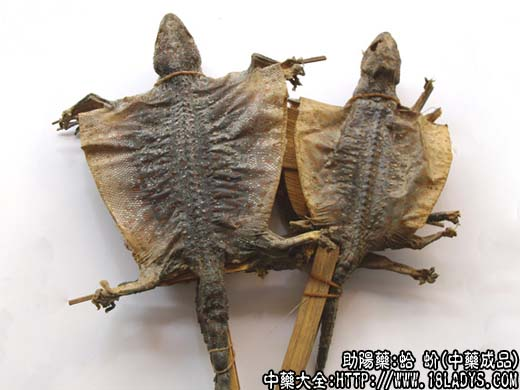

蛤蚧为较常用中药。始载《开宝本草》因其叫声而命名。
别名：仙蟾、大壁虎。
来源：为脊柱动物爬行纲、有鳞目、守官科动物蛤蚧，除去内脏的干燥躯体。多为野生，亦有养殖。
产地：主产于广西南宁、百色。柳州、玉林等地区，此外广东、云南部分地区也有少量生产；亦有越南进口。
性状鉴别：原形似壁虎而长大。加工后的商品，头尾四足均用竹签撑直，胸腹纵向剖裂，除去内脏后，用竹片撑成扁圆片状。体形大小不一，全长20~30余厘米，腹胸横 宽6~10厘米。全身灰褐色，腹面稍淡，满布圆形或多角形小鳞片，并有黄棕色或棕色花斑。头略呈钝三角形或卵圆形，牙齿无大小之分，均细密如锯齿，生于上下颚骨外缘，上颚前端两侧有 鼻孔一对，头中部有深陷的眼睛一对，后部有裂隙状椭圆形耳窍一对。背部脊椎呈嵴状突起，两旁肋骨微呈线状突起，另有纵列小点状突起十行，年久者突起较高，幼小者不甚显著。四足均 具五趾，除前足第一支趾无勾爪外，其余均具勾爪。趾膨大，底面具单行褶襞皮瓣（有吸附作用，活时可爬行于洞穴悬空的顶面及陡壁之上）。尾长圆锥形，约占体全长的50%左右（活蛤蚧尾 易断落，但再生能力很强。再生尾较短小）。气腥，味微咸，以体形肥大，尾完整不残者为佳。
主要成分：含动物淀粉、蛋白质、脂肪。
功效与作用：补肺肾、止喘嗽，有滋补、强壮作用。
炮制：剁去头足、除去竹片、生用。
性味：咸，温。
归经：入肺、肾经。
功能：补肺肾，益精血，强腰膝，止咳喘。
主治：虚劳咳嗽，气喘，肺痿，咯血，消渴，阳痿，腰膝无力等症。
临床应用：主要用于虚喘。
1、治虚症喘咳，包括肾阳虚和肺阴虚所致的慢性喘咳，例如支气管哮喘、心性喘息、肺气肿，特别是治疗肺结核引起的喘咳、痰中带血，蛤蚧更是常用药。或配百部、紫菀、五味子；或配贝母、桑白皮、杏仁等。水煎服，方如蛤蚧汤。也可单用蛤蚧注射液。
急性支气管炎、肺炎所致的喘咳，蛤蚧疗效不显著；咳喘属风寒痰饮者也不宜用。
2、用于治肾阳虚之阳痿、性机能减退、五更泄泻、小便频数，可与朝鲜参、五味子、核桃肉共研末为丸服食，或配马戟、茯苓、白术等。
此外，也用于治久病体弱、神经衰弱。
使用注意：蛤蚧可水煎服、制丸散，或浸酒服。著名的蛤蚧酒就常用于补肾壮阳，但对喘咳者，酒有刺激性，反为不利，最好还是焙干后蜜炙成蜜丸，或研碎，和药冲 服。
用量：浸酒用1~2对，鲜品剖形后去内脏，浸入50度米酒内。干品研末，一般用0.9~1.5g大剂用3~6g，最好取尾（习惯上认为药力在尾），配其他滋补汤药冲服。又可用 蛤蚧一对清炖，或加瘦猪肉、冬虫草炖服。
处方举例：蛤蚧汤：蛤蚧1对，百部12g，紫菀9g，五味子1.5g，杏仁9g，桑白皮9g，水煎服。
注：广东、广西以及华东地区和西藏部分地区，有一种蜥鬣科动物蜡皮蜥（喜山鬣蜥）与蛤蚧类似，当地土名四脚蛇或鸡公蛇，与蛤蚧的主要区别在于本品背部鳞片极 细小，有较明显的橙色花斑并常随季节而变换颜色。趾如鸟爪而不褶襞皮瓣，牙齿生于上下颚内缘并有大牙齿，尾特长几达身长的1.5~2.5倍。据在西藏地区工作的药工人员以喜山鬣蜥饲畜进 行试验，有明显的兴阳作用，是否与蛤蚧同功，尚待研究，但不宜称为蛤蚧药用。